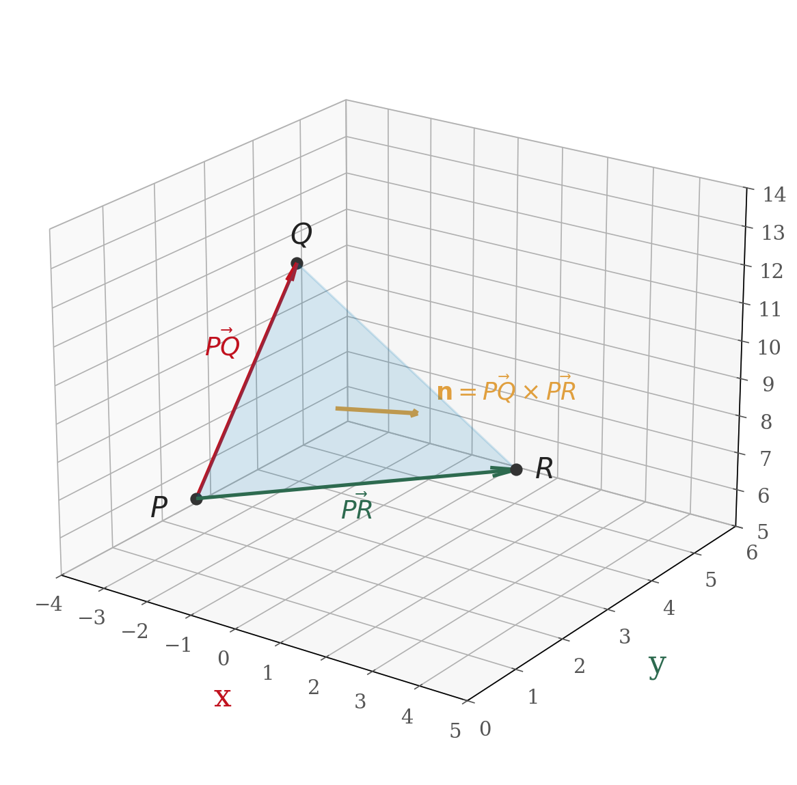

Section 12.4: The Cross Product
MTH 310 — Calculus III | Vectors and the Geometry of Space
The Cross Product — A New Kind of Product
The dot product takes two vectors and returns a scalar (\(\vec{a} \cdot \vec{b} \in \mathbb{R}\)).
Now we introduce a second way to multiply vectors:
- The cross product is only defined in 3D (not 2D!)
- It's used everywhere: torque, angular momentum, normal vectors to surfaces, area calculations
Quick Review: Determinants
2 $\times$ 2 Determinant
\[\begin{vmatrix} a & b \ c & d \end{vmatrix} = ad - bc\]
Example 1
Compute the determinant \(\begin{vmatrix} 2 & 3 \ 4 & 1 \end{vmatrix}\).
\[\begin{vmatrix} 2 & 3 \ 4 & 1 \end{vmatrix} = (2)(1) - (3)(4) = 2 - 12 = -10\]
3 $\times$ 3 Determinant (Cofactor Expansion)
Expand along the first row:
\[\begin{vmatrix} a_1 & a_2 & a_3 \ b_1 & b_2 & b_3 \ c_1 & c_2 & c_3 \end{vmatrix} = a_1 \begin{vmatrix} b_2 & b_3 \ c_2 & c_3 \end{vmatrix} - a_2 \begin{vmatrix} b_1 & b_3 \ c_1 & c_3 \end{vmatrix} + a_3 \begin{vmatrix} b_1 & b_2 \ c_1 & c_2 \end{vmatrix}\]
Notice the alternating signs: \(+\), \(-\), \(+\).
Example 2
Compute the determinant:
\[\begin{vmatrix} 2 & 3 & 1 \ 4 & 1 & -3 \ -2 & 5 & 2 \end{vmatrix}\]
Expand along the first row using the cofactor formula.
Setup: Expand along the first row with alternating signs \(+\), \(-\), \(+\):
\[= 2\begin{vmatrix} 1 & -3 \ 5 & 2 \end{vmatrix} - 3\begin{vmatrix} 4 & -3 \ -2 & 2 \end{vmatrix} + 1\begin{vmatrix} 4 & 1 \ -2 & 5 \end{vmatrix}\]
Expand each 2x2 determinant:
\[= 2(1 \cdot 2 - (-3) \cdot 5) - 3(4 \cdot 2 - (-3)(-2)) + 1(4 \cdot 5 - 1 \cdot (-2))\]
The Cross Product Formula
Cross Product
If \(\vec{a} = \langle a_1, a_2, a_3 \rangle\) and \(\vec{b} = \langle b_1, b_2, b_3 \rangle\), then:
\[\vec{a} \times \vec{b} = \begin{vmatrix} \vec{i} & \vec{j} & \vec{k} \ a_1 & a_2 & a_3 \ b_1 & b_2 & b_3 \end{vmatrix}\]
Expanding along the first row:
\[\vec{a} \times \vec{b} = \vec{i}(a_2 b_3 - a_3 b_2) - \vec{j}(a_1 b_3 - a_3 b_1) + \vec{k}(a_1 b_2 - a_2 b_1)\]
Example 3: Computing a Cross Product
Example 3
Let \(\vec{a} = \langle -1, 3, 4 \rangle\) and \(\vec{b} = \langle 5, 2, 1 \rangle\). Find \(\vec{a} \times \vec{b}\).
Set up the 3x3 determinant and expand along the first row.
Step 1 — Set up the determinant:
\[\vec{a} \times \vec{b} = \begin{vmatrix} \vec{i} & \vec{j} & \vec{k} \ -1 & 3 & 4 \ 5 & 2 & 1 \end{vmatrix}\]
Step 2 — Expand:
\[= \vec{i}(3 \cdot 1 - 4 \cdot 2) - \vec{j}((-1) \cdot 1 - 4 \cdot 5) + \vec{k}((-1) \cdot 2 - 3 \cdot 5)\]
Step 3 — Simplify:
\[= \vec{i}(3 - 8) - \vec{j}(-1 - 20) + \vec{k}(-2 - 15)\]
\[= -5\,\vec{i} + 21\,\vec{j} - 17\,\vec{k} = \langle -5, 21, -17 \rangle\]
Verification: \(\vec{a} \times \vec{b}\) should be perpendicular to both inputs, so the dot products should be zero:
\[\vec{a} \cdot (\vec{a} \times \vec{b}) = \langle -1, 3, 4 \rangle \cdot \langle -5, 21, -17 \rangle = 5 + 63 - 68 = 0 \;\checkmark\]
Your Turn: Cross Product Practice
Example 4
Compute \(\langle 1, 0, 2 \rangle \times \langle 3, 1, -1 \rangle\).
Set up the determinant and expand. Check your answer with a dot product.
Determinant setup:
\[\begin{vmatrix} \vec{i} & \vec{j} & \vec{k} \ 1 & 0 & 2 \ 3 & 1 & -1 \end{vmatrix}\]
Expand:
\[= \vec{i}(0 \cdot (-1) - 2 \cdot 1) - \vec{j}(1 \cdot (-1) - 2 \cdot 3) + \vec{k}(1 \cdot 1 - 0 \cdot 3)\]
\[= \vec{i}(0 - 2) - \vec{j}(-1 - 6) + \vec{k}(1 - 0)\]
\[= \langle -2, 7, 1 \rangle\]
Key Properties of the Cross Product
Here are the properties you'll use most often:
| Property | Meaning |
|---|---|
| \(\vec{a} \times \vec{a} = \vec{0}\) | A vector is parallel to itself, so the cross product is the zero vector |
| \(\vec{a} \times \vec{b}\) is orthogonal to both \(\vec{a}\) and \(\vec{b}\) | The result is perpendicular to both inputs |
| \(\vec{a} \times \vec{b} = -(\vec{b} \times \vec{a})\) | Anti-commutative — swapping order flips the sign |
Which direction does \(\vec{a} \times \vec{b}\) point? Use the right-hand rule:
- Point your fingers along \(\vec{a}\)
- Curl them toward \(\vec{b}\)
- Your thumb points in the direction of \(\vec{a} \times \vec{b}\)

Magnitude of the Cross Product
Magnitude Formula
\[|\vec{a} \times \vec{b}| = |\vec{a}|\,|\vec{b}|\,\sin\theta\]
where \(\theta\) is the angle between \(\vec{a}\) and \(\vec{b}\) (\(0 \leq \theta \leq \pi\)).
Compare with the dot product:
- Dot product: \(\vec{a} \cdot \vec{b} = |\vec{a}|\,|\vec{b}|\,\cos\theta\) — measures alignment
- Cross product magnitude: \(|\vec{a} \times \vec{b}| = |\vec{a}|\,|\vec{b}|\,\sin\theta\) — measures perpendicularity
If \(\theta = 0\) or \(\theta = \pi\) (vectors are parallel), then \(\sin\theta = 0\), so:
This gives us two tests:
- Parallel test: \(\vec{a} \times \vec{b} = \vec{0}\)
- Perpendicular test (from 12.3): \(\vec{a} \cdot \vec{b} = 0\)
Area from the Cross Product
Recall that the area of a parallelogram is base \(\times\) height:
\[\text{Area} = |\vec{a}|\,(|\vec{b}|\sin\theta) = |\vec{a} \times \vec{b}|\]

This is incredibly useful: find the area of any triangle in 3D just from its three vertices!

Example 5: Normal Vector and Area from Three Points
Example 5
Given \(P(-2, 1, 7)\), \(Q(-3, 4, 11)\), and \(R(3, 3, 8)\):
(a) Find a vector perpendicular to the plane through \(P\), \(Q\), \(R\).
(b) Find the area of triangle \(PQR\).
Form two edge vectors from P, then take their cross product.
Step 1 — Edge vectors:
\[\vec{PQ} = Q - P = \langle -3 - (-2),\; 4 - 1,\; 11 - 7 \rangle = \langle -1, 3, 4 \rangle\]
\[\vec{PR} = R - P = \langle 3 - (-2),\; 3 - 1,\; 8 - 7 \rangle = \langle 5, 2, 1 \rangle\]
Step 2 — Normal vector (cross product — already computed in Example 3!):
\[\vec{PQ} \times \vec{PR} = \langle -5, 21, -17 \rangle\]

Cross Products of the Standard Basis Vectors
The standard basis vectors \(\vec{i}\), \(\vec{j}\), \(\vec{k}\) follow a cyclic pattern:
Forward (cyclic order \(\vec{i} \to \vec{j} \to \vec{k} \to \vec{i}\)):
\[\vec{i} \times \vec{j} = \vec{k}, \qquad \vec{j} \times \vec{k} = \vec{i}, \qquad \vec{k} \times \vec{i} = \vec{j}\]
Backward (reversed order = negative):
\[\vec{j} \times \vec{i} = -\vec{k}, \qquad \vec{k} \times \vec{j} = -\vec{i}, \qquad \vec{i} \times \vec{k} = -\vec{j}\]

Section 12.4 Summary
Cross Product
\(\vec{a} \times \vec{b} = \begin{vmatrix} \vec{i} & \vec{j} & \vec{k} \ a_1 & a_2 & a_3 \ b_1 & b_2 & b_3 \end{vmatrix}\)
Result
Always a vector, perpendicular to both inputs
Direction
Right-hand rule: curl from \(\vec{a}\) to \(\vec{b}\), thumb points along \(\vec{a} \times \vec{b}\)
Magnitude
\(|\vec{a} \times \vec{b}| = |\vec{a}|\,|\vec{b}|\sin\theta\)
Parallel Test
\(\vec{a} \times \vec{b} = \vec{0}\) iff \(\vec{a} \parallel \vec{b}\)
Area
Parallelogram: \(|\vec{a} \times \vec{b}|\). Triangle: \(\tfrac{1}{2}|\vec{a} \times \vec{b}|\)